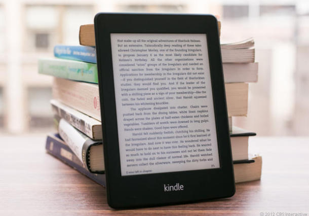

Amazon's newest Kindle Paperwhite: brighter, faster
Amazon.com is updating its Kindle e-reader business, offering some modest tweaks to its Kindle Paperwhite device to make it brighter and faster.
The new Paperwhite, the same size and weight as the current model, is available for pre-order on Amazon's website now. The Wi-Fi version is priced at $119 with ads and $139 without. The company says it will start shipping those devices Sept. 30.
A version with 3G connectivity will cost $189 and begin shipping Nov. 5. Amazon has increased the contrast on the screen, making the new Paperwhite easier to read in direct sunlight. At its highest contrast setting, there's a noticeable difference in the screen brightness from the current Paperwhite.
The company said it also has boosted the processor speed by 25 percent. That means books should open faster and digital pages should flip more quickly.
Those changes may be too subtle for most readers to notice. One update they will see is the Goodreads "g" logo at the top of the home screen on the device. Amazon bought the book-reading community earlier this year. The service has 20 million members who share their favorite reads with one another on the social network.
Maybe more important for Amazon, those customers can buy e-books for their Kindles directly from those Goodreads recommendations.
Amazon has also added a technology it's calling "Page Flip," designed to digitally mimic the physical act of saving a page with a finger while thumbing back through a book to find another page. With Page Flip, a slightly smaller window opens on top of the page being read, which readers can then use to scan through the book.
The new Paperwhite also includes Kindle FreeTime, a parental control and monitoring program. Parents can keep tabs on the books their kids read, how long they read, and even what words they look up. Kids can earn badges for hitting reading goals created by their parents. And they can add books to wish lists that parents can then purchase for the devices.